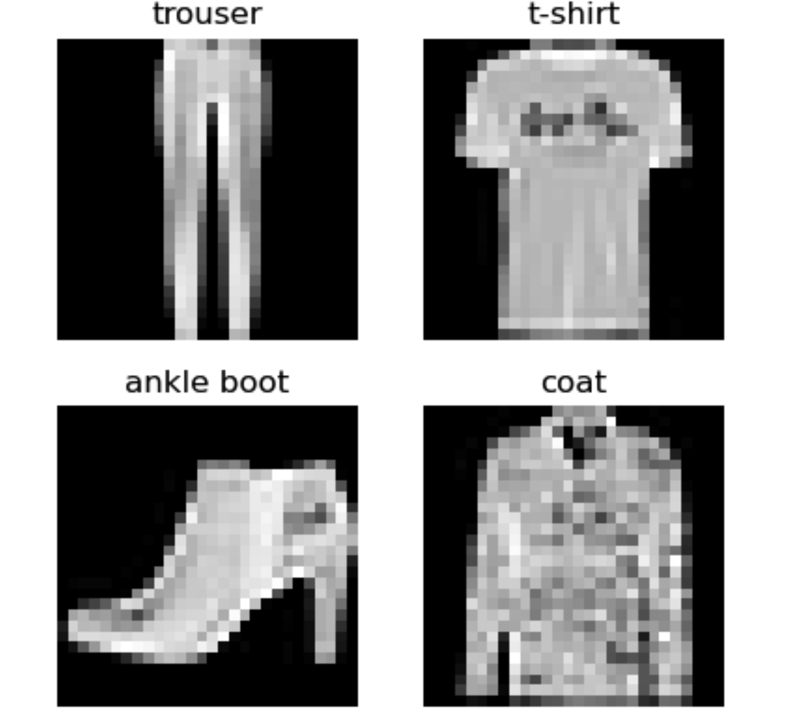
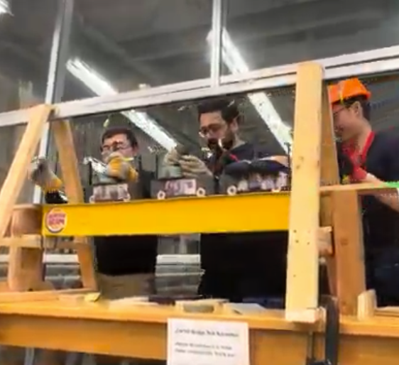
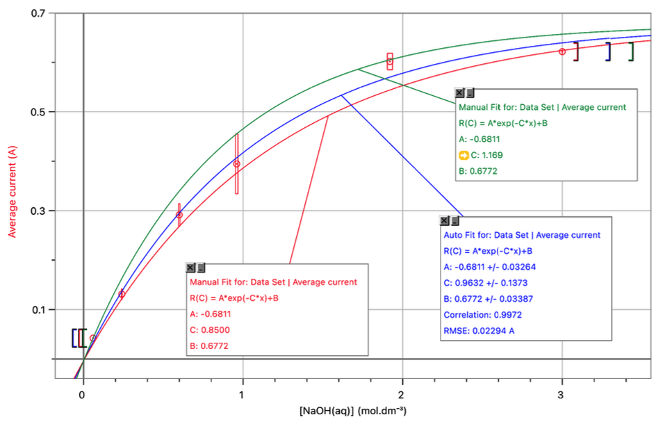
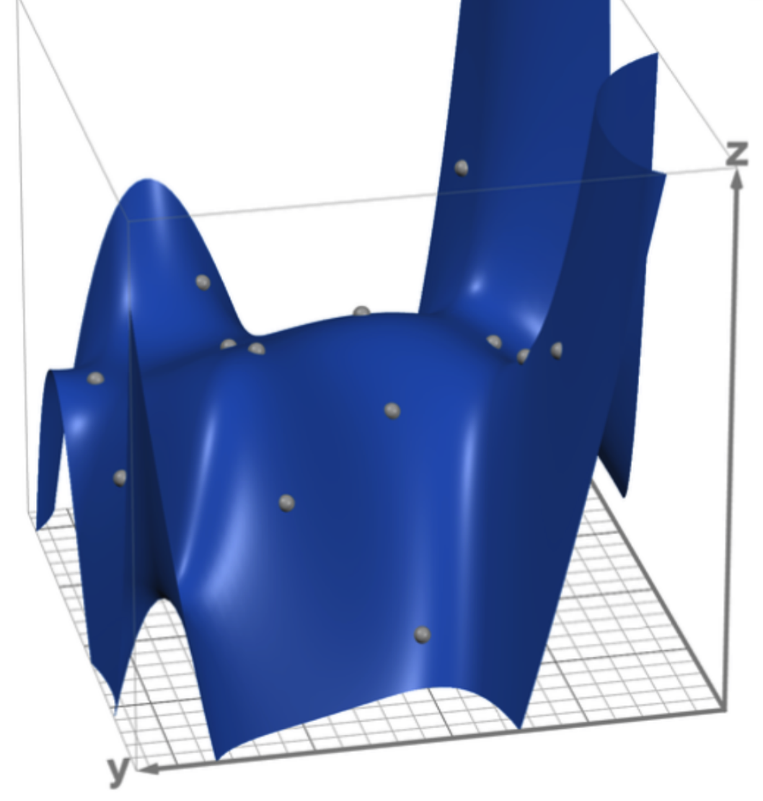
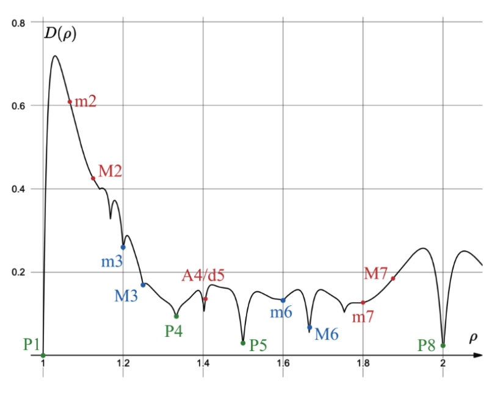

Matthew Lam
I'm a second-year Engineering Science student at the University of Toronto. I'm interested in hardware/software co-design for computer vision, imaging and communication systems. I'm equally interested in electrochemistry and clean energy. I'm also a member of the RF Communications subteam at the University of Toronto Aerospace Team - Space Systems.

This was my first computer vision project as well as my first ML project. It consists of a convolutional neural network that classifies images of clothing items. It is trained on the Fashion-MNIST dataset.

Matboard beam bridge spanning 1200 mm and withstanding a 580 N load from a rolling toy train. We wrote a Python script to calculate factors of safety of our design, and predict how well our bridge would perform during testing.

I designed and ran a water electrolysis experiment to determine the effect of varying NaOH concentration on rate of water electrolysis. I measured rate using electrical current and rate of H2 production.

Comparison of nearest-neighbor, bilinear, bicubic and bicubic spline interpolation methods for image resizing. I applied these methods to an image in MATLAB, then compared results visually and with mean squared error.

Exploration of models of musical consonance based on frequency ratio, beating and roughness, including William Sethares's model (1999). Illustration of the model using FFT in MATLAB to compute frequency spectra.
This website is adapted from Jon Barron's website (source code here).
{kind=link}